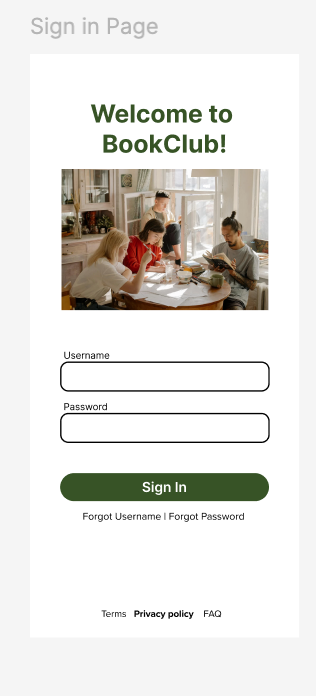
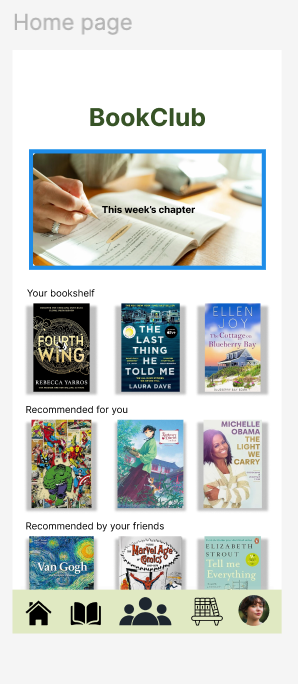
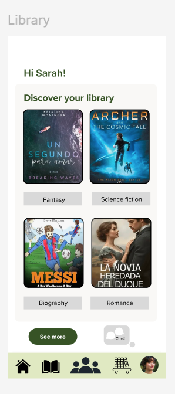
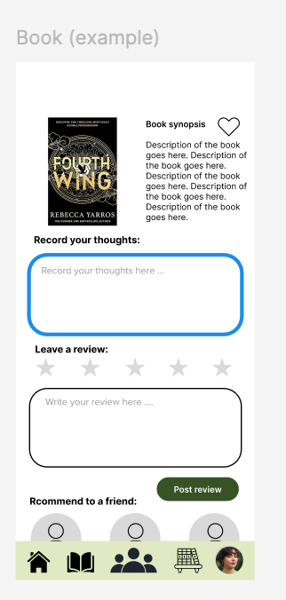
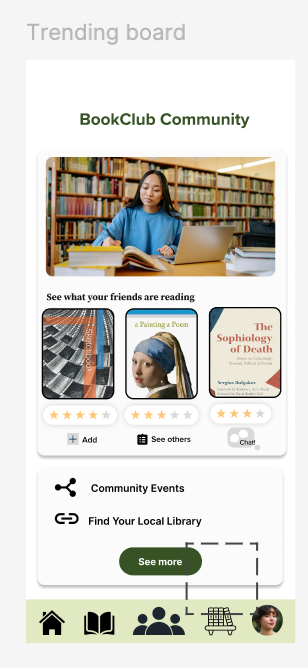
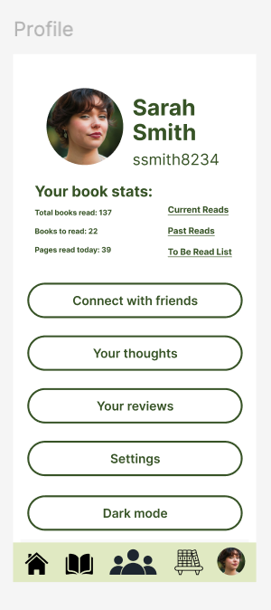
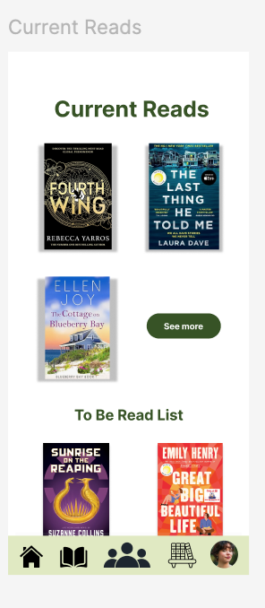
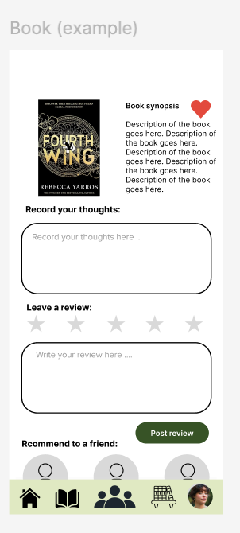

How often do you read?
← All projects
Project 06 · Design Thinking
BookClub
A social reading experience that helps university students read consistently, discover books, and connect through shared stories.

- Role
- UX Researcher & Product Designer
- Team
- 2 Members
- Timeline
- May 5 to May 28, 2025
- Tools
- Figma, Canva, interviews, prototyping
- Type
- Mobile app design
Overview
Helping reading fit into student life.
BookClub is a mobile app concept designed to help university students read more consistently, discover new books, track their reading, and connect with friends through shared reading experiences.
The challenge
Students want to read. Their routines get in the way.
Current university students often want to read more, but schoolwork, limited time, distractions, cost, and difficulty finding interesting books prevent a consistent habit.
Research
22 student interviews.
We interviewed students from the University of Michigan and BAU (College of Arts & Design Barcelona) to understand their reading habits, preferences, challenges, and motivations.
What format do you prefer?
Where and when do you read?
How do you choose books?
What prevents you from reading more?
What could improve your experience?
Key research insights
What we heard.
Students want to read more
Most participants wished they read more frequently.
Physical books are preferred
Print was favored for enjoyment, while digital and audio formats offered convenience and affordability.
Time is the main barrier
Academic work reduced reading time during the semester.
Reading happens in short moments
Students read in bed, while commuting, and during brief breaks.
Recommendations matter
Friends, covers, social media, reviews, and recommendations shaped book choices.
Point of view
86%of interviewed students wanted to read more.
Students may read more when the experience is accessible, affordable, social, and easy to fit into daily routines.
The solution
Smaller chapters. Shared momentum.
BookClub releases books one or two chapters at a time, making reading feel less overwhelming and creating natural moments for discussion with friends.
- Track completed and current books
- Create a future reading list
- Discover personalized recommendations
- Review and rate books
- Recommend books to friends
- Find community events and libraries
My role
UX Researcher and Product Designer
- Developed interview questions
- Conducted student interviews
- Recorded participant responses
- Synthesized patterns and insights
- Helped define the point of view
- Designed Figma screens
- Created flows and prototypes
- Refined designs from feedback
I served as the interviewer for participants 6-10 and 11-15
Design process
Research guided every decision.
- 01
Empathize
Interview students about routines, motivations, frustrations, and preferred formats.
- 02
Define
Synthesize the central barriers: time, access, distractions, and consistency.
- 03
Ideate
Explore ways to make reading manageable, social, affordable, and engaging.
- 04
Prototype
Design the sign-in, home, library, book, community, profile, and reading-list experiences.
- 05
Test
Collect feedback about usability, customization, profiles, reviews, and sharing.
Interactive prototype
Try the BookClub experience.
Move through the prototype to explore the sign-in, discovery, library, book details, community, and reading-management flows.
If the prototype does not load, open it directly in Figma.
Prototype screens
One reading journey, eight primary screens.
The interface uses a consistent green, cream, and black visual system across discovery, tracking, reviews, and community features.







User feedback
Complete, useful, and easy to use.
Users especially valued book discovery, reviews, social connection, tracking, and personalized recommendations.
Opportunities for improvement
- Custom color themes
- More detailed profiles
- Friends' bookshelves
- Global reviews
- Shareable chapters
- News and article uploads
Outcome
A connected reading experience.
The final prototype combines book discovery, personal reading management, reviews, recommendations, and community features in one cohesive mobile product.
Reflection
Research became the design system.
This project strengthened my skills in interviews, qualitative synthesis, mobile UI design, prototyping, collaboration, and human-centered problem solving. I learned how research findings guide product decisions and how feedback improves both functionality and usability.